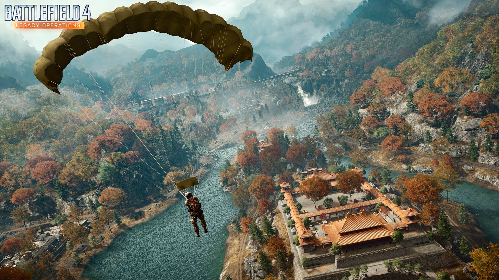

【前準備】 ゲーム側）明るさ設定：0-100の任意の明るさ(何でもいいよ！) PS4側) 設定 → シェアとブロードキャスト： ・SHAREボタン操作タイプ;標準(【スクリーンショット向け】で慣れていればそちらでもよい) ・ビデオクリップの長さ；5分 ＊シェアボタンを初めて使う人＊ シェアについての説明が出てくるので、あらかじめシェアボタンでスクリーンショットか動画を一度撮っておいてください。 【流れ】前半も後半も試合が始まっている必要はないです。 (1: ランクなしサーバーorプライベートサーバー に入る。) ・拠点Hのランタンを全て灯す ・柱ウラのキーパッドに83980800000を入力する。 ・モールス信号を撮影する。 ・モールス信号を解読する。 (2: ランクサーバーor公式サーバーに入る。) ・A付近にある鉄塔の支柱の前に向かって2分間立つ ・足元に出現するボタンを押す。 ・柱にキーパッドが表示されるのでモールス信号で受け取った7－9桁の数字を入力する。 【作業】 ランタンを全部灯すには以下のサイトを使って押すボタンを見つける。 パズル解読サイト 上記のサイトで示されたボタンを全て押すとピピッとなり全ランタンが点いたことになる 柱のキーパッドに839 8080 0000〈はっさくパオパオおおおお〉を入力するとピピッの音と共にモールス信号が開始する。 開始から4分経ったらシェアボタンを押し、□ボタンを押す。動画が保存される。 (初めてやる人はシェアについての説明が出てくるので、あらかじめシェアボタンでスクリーンショットか動画を取っておいてください。) 開始合図のピピッから2:56で---...(ツーツーツータタタ)が出るので少なくともそこからは記録してあるように。 スタートから3分23秒でモールス信号が終わる。(少し長めの消灯の後また初めからツー、ツーツーツー(－ －－－)が始まる)